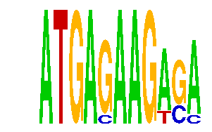

family_4 |
|---|
|  |
| Download PWM |
| Download instances (motifs) |
| Show motif distribution |
Query_ID | Query_Consensus | Subject_Name | Source_DB | Subject_ID | Length | Orientation | Offset | Divergence | Overlap | Subject_Consensus |
|---|---|---|---|---|---|---|---|---|---|---|
| family_4 | ATGAGAAGAGA | YCATTAA | JASPAR | PF0058 | 7 | reverse-complement | -3 | 0.624 | 4 | TCATTAA |
Sequence | Start_position (from start) | Start_position (from end) | Average conservation | Best conservation score | Instance_with_best_CS | Best_Z-score | Instance_with_best_ZS | Strand |
|---|---|---|---|---|---|---|---|---|
| chr8:13282200-13283498 | 713 | 724 | 0.000181818 | 0.001 | ATGAGAAGASM | 13.962296 | ATGAGAAGWSA | 1 |
| chr14:35365585-35367700 | 1608 | 1619 | 0.00127273 | 0.005 | ATGAGAAGWSA | 12.745775 | ATGASAAGWGA | 1 |
| chr10:52896500-52897547 | 370 | 381 | 0.00209091 | 0.006 | ATGAGAAGWSA | 12.745775 | ATGASAAGWGA | 1 |
| chr6:24562167-24563167 | 840 | 851 | 0.0743636 | 0.229 | ATGASAAGWGA | 12.745775 | ATGASAAGWGA | 1 |
| chr7:3297200-3299400 | 1564 | 1575 | 0.0488182 | 0.082 | ATGASAAGWGA | 13.962296 | ATGAGAAGWSA | 1 |
| chr7:56094100-56096800 | 127 | 138 | 0.122727 | 0.269 | ATGASAAGWGA | 13.962296 | ATGAGAAGWSA | 1 |
| chr4:147335900-147338900 | 1764 | 1775 | 0.00336364 | 0.005 | ATGAGAAGASM | 12.745775 | ATGAGAAGASM | -1 |
| chr5:31946600-31948500 | 1111 | 1122 | 0.0193636 | 0.05 | ATGAGAAGASM | 13.962296 | ATGAGAAGWSA | 1 |
| chr2:90963200-90967100 | 690 | 701 | 0.00109091 | 0.005 | ATGAGAAGASM | 13.962296 | ATGAGAAGWSA | 1 |
| chr13:12119812-12125100 | 909 | 920 | 0.0387273 | 0.043 | ATGASAAGWGA | 13.962296 | ATGAGAAGWSA | 1 |
| chr17:10030172-10031900 | 88 | 99 | 0.00872727 | 0.019 | ATGAGAAGASM | 13.962296 | ATGAGAAGWSA | 1 |
| chr13:29792600-29793845 | 162 | 173 | 0.111727 | 0.231 | ATGASAAGWGA | 12.745775 | ATGASAAGWGA | 1 |
| chr8:46972802-46974502 | 90 | 101 | 0.000181818 | 0.001 | ATGAGAAGWSA | 13.962296 | ATGAGAAGWSA | 1 |
| chr7:16934900-16936200 | 403 | 414 | 0.625273 | 0.756 | ATGAGAAGWSA | 12.745775 | ATGAGAAGASM | 1 |
| chr8:46985026-46987900 | 405 | 416 | 0.321818 | 0.588 | ATGAGAAGASM | 12.745775 | ATGAGAAGASM | 1 |
| chr13:29568107-29569107 | 836 | 847 | 0.00454545 | 0.028 | ATGAGAAGWSA | 12.745775 | ATGASAAGWGA | -1 |
| chr10:6868093-6869100 | 556 | 567 | 0.0480909 | 0.053 | ATGAGAAGWSA | 12.745775 | ATGASAAGWGA | 1 |